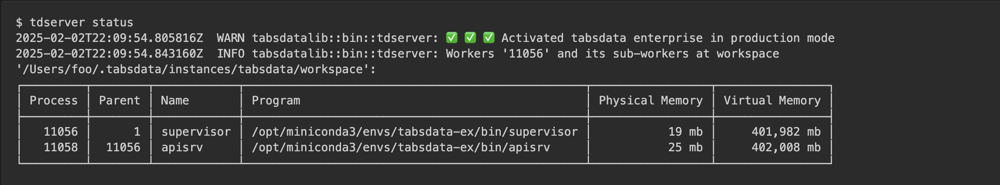
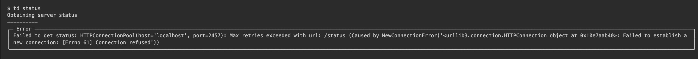
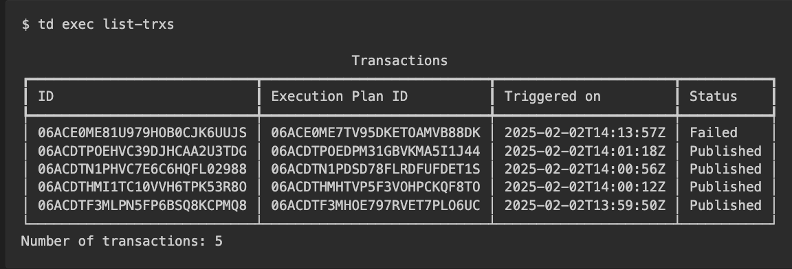

Troubleshooting#
Check the Server Status#
Use the tdserver status command to check the status of the
TabsData server.
Sample output when running:
{kind=link}
Sample output when not running:
$ tdserver status
2025-02-02T21:34:16.330213Z WARN tabsdatalib::bin::tdserver: ✅ ✅ ✅ Activated tabsdata enterprise in production mode
2025-02-02T21:34:16.348513Z WARN tabsdatalib::bin::tdserver: TabsData instance '/Users/foo/.tabsdata/instances/tabsdata/workspace' not running: 'NotRunning { pid: 90788 }'
Check the Server Logs#
Use the tdserver log command to check the logs of the TabsData
server. It will print (continuously) the logs of the server. Press
Ctrl+C to stop.
For example:
$ tdserver log
...
Source: /Users/foo/.tabsdata/instances/tabsdata/workspace/work/proc/regular/apisrv/work/log/td.log - Line: 2025-02-02T22:12:10.370237Z DEBUG tower::buffer::worker: service.ready=true processing request
Source: /Users/foo/.tabsdata/instances/tabsdata/workspace/work/proc/regular/apisrv/work/log/td.log - Line: 2025-02-02T22:12:10.370237Z DEBUG tower::buffer::worker: service.ready=true processing request
Source: /Users/foo/.tabsdata/instances/tabsdata/workspace/work/log/td.log - Line: 2025-02-02T22:12:10.746806Z DEBUG td_common::monitor:
Source: /Users/foo/.tabsdata/instances/tabsdata/workspace/work/log/td.log - Line: - Process PID...: 11056
Source: /Users/foo/.tabsdata/instances/tabsdata/workspace/work/log/td.log - Line: - Process Physical Memory: 30 mb
Source: /Users/foo/.tabsdata/instances/tabsdata/workspace/work/log/td.log - Line: - Process Virtual Memory.: 402,494 mb
Source: /Users/foo/.tabsdata/instances/tabsdata/workspace/work/log/td.log - Line: - System Total Memory....: 131,072 mb
Source: /Users/foo/.tabsdata/instances/tabsdata/workspace/work/log/td.log - Line: - System Used Memory.....: 56,216 mb
Source: /Users/foo/.tabsdata/instances/tabsdata/workspace/work/log/td.log - Line: - System Free Memory.....: 36,798 mb
Source: /Users/foo/.tabsdata/instances/tabsdata/workspace/work/proc/regular/apisrv/work/log/td.log - Line: 2025-02-02T22:12:10.872019Z DEBUG tower::buffer::worker: service.ready=true processing request
S
...
Check the Server Status using the Client Command-Line Tool#
Use the td status command to check the status of the TabsData
server. You must be logged in to the server to use the td
command-line tool.
Sample output when logged in:
$ td status
Obtaining server status
----------
Status: 'OK', latency_as_nanos: 24333
Sample output when not logged in:
$ td status
No credentials found. Please login first.
Sample output when ``Tabsdata`` server is not running:
{kind=link}
The Execution of a Function Failed#
After triggering a function, the td exec list-trxs reports the
transaction as failed.
For example:
{kind=link}
If a transaction is in Failed status, all functions that did not
complete successfully yet are either in Failed status or on
Hold. An all functions from all transactions that depend on the
failed transaction will also be on Hold status if they didn’t
execute yet.
Find the Workers of the Failed Transaction that Already Executed#
To find the workers of the failed transaction that already executed, use
the td exec list-workers command with one of the following 3
options:
--trx <TRX_ID>to list workers of a specific transaction (thetd exec list-trxsprovides transaction IDs).--plan <PLAN_ID>to list workers of a specific execution plan (thetd exec list-trxsprovides execution plan IDs).--fn <FN_ID>to list workers of a specific function (thetd fn infoprovides the function ID for a function).
{kind=link}
Fetch the logs of a Worker#
To fetch the logs of a worker, use the
td exec logs --worker <WORKER_ID> command.
td exec logs --worker 06ACHMC505VC10HMF7NI1D9RUG
Logs from worker '06ACHMC505VC10HMF7NI1D9RUG':
********************
/Users/foo/.tabsdata/instances/tabsdata/workspace/work/proc/ephemeral/dataset/work/cast/06ACHMC505VC10HMF7NI1D9RUG_1/work/log/err.log
-----------------------------------------------
Traceback (most recent call last):
File "<frozen runpy>", line 198, in _run_module_as_main
File "<frozen runpy>", line 88, in _run_code
File "/Users/foo/.tabsdata/environments/726fbc09de/lib/python3.12/site-packages/tabsserver/function_execution/execute_function_from_bundle_path.py", line 106, in <module>
raise e
File "/Users/foo/.tabsdata/environments/726fbc09de/lib/python3.12/site-packages/tabsserver/function_execution/execute_function_from_bundle_path.py", line 96, in <module>
execute_bundled_function(
File "/Users/foo/.tabsdata/environments/726fbc09de/lib/python3.12/site-packages/tabsserver/function_execution/execute_function_from_bundle_path.py", line 35, in execute_bundled_function
results = execution_utils.execute_function_from_config(
^^^^^^^^^^^^^^^^^^^^^^^^^^^^^^^^^^^^^^^^^^^^^
File "/Users/foo/.tabsdata/environments/726fbc09de/lib/python3.12/site-packages/tabsserver/function_execution/execution_utils.py", line 87, in execute_function_from_config
return execute_function_with_config(config, met, working_dir, execution_context)
^^^^^^^^^^^^^^^^^^^^^^^^^^^^^^^^^^^^^^^^^^^^^^^^^^^^^^^^^^^^^^^^^^^^^^^^^
File "/Users/foo/.tabsdata/environments/726fbc09de/lib/python3.12/site-packages/tabsserver/function_execution/execution_utils.py", line 131, in execute_function_with_config
result = met(*parameters)
^^^^^^^^^^^^^^^^
File "/Users/foo/src/tabsdata/github/tabsdata-ex/publisher.py", line 10, in pub
assert False
^^^^^
AssertionError
===============================================
/Users/foo/.tabsdata/instances/tabsdata/workspace/work/proc/ephemeral/dataset/work/cast/06ACHMC505VC10HMF7NI1D9RUG_1/work/log/fn.log
-----------------------------------------------
...
Depending on the type of error, you may need to retry the transaction or cancel it.
If there is an error in your function code, you need cancel the transaction, fix the issue in the code, update the function and re-trigger the function that started the cancelled transaction.
Recover the Transaction#
To recover the transaction use the td exec recover --trx <TRX_ID>
command. It will retry all workers that failed and reschedule all
workers that were on hold. The recover also applies to all the dependent
transactions.
For example:
td exec recover --trx 06ACE0ME7TV95DKETOAMVB88DK
Recovering transaction with ID '06ACHMC4H1QJ3E7VS99VSRES4K'
----------
Execution plan recovered successfully
Cancel the Transaction#
To cancel the transaction use the td exec cancel --trx <TRX_ID>
command. It will cancel all workers of the transaction, including the
ones that finished successfully. The cancel also applies to all the
dependent transactions.
For example:
td exec cancel --trx 06ACE0ME7TV95DKETOAMVB88DK
Canceling transaction with ID '06ACHMC4H1QJ3E7VS99VSRES4K'
----------
Execution plan canceled successfully